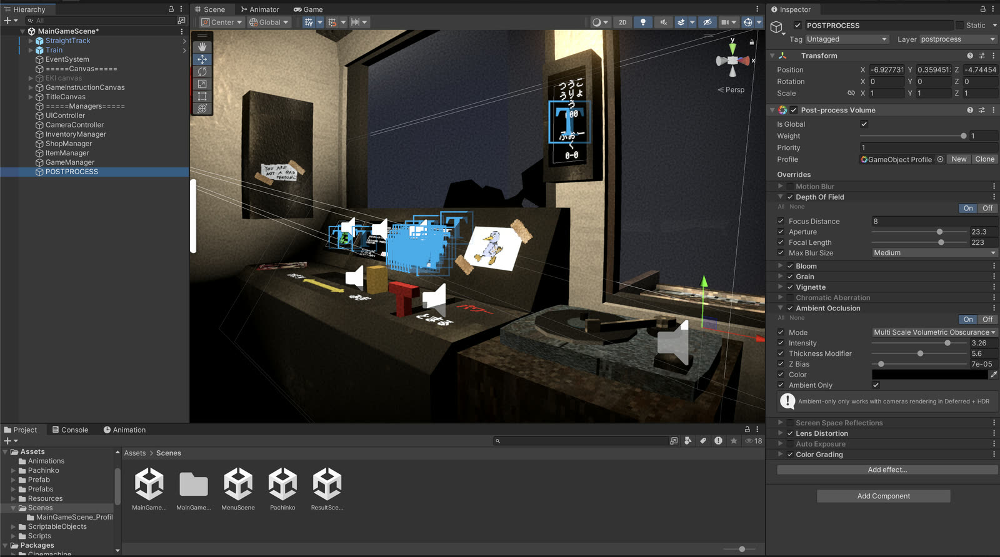
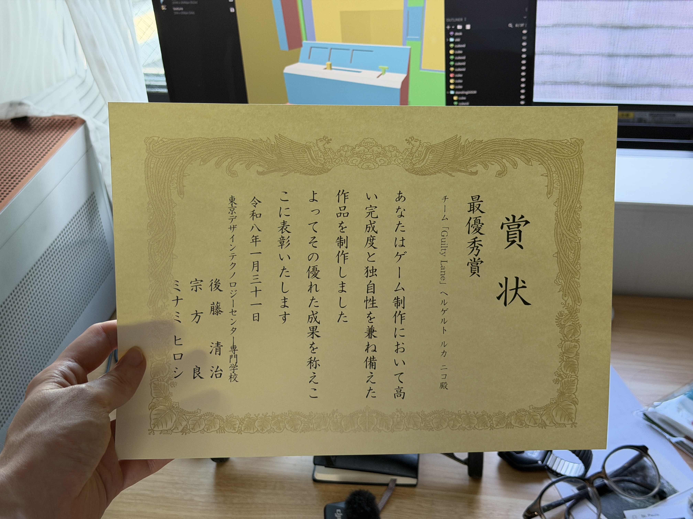

My role
Programmer +
Technical artist
A first-person train game that was selected as the best work of 2025-2026 across all game programming courses, from 1st to 4th year. A trolley problem turned into a game: you decide who to kill, left or right. I worked on programming, art, and music.
My own contributions to this project
UnityUIVisual effectsLightingPost process
C#Train controllerTrack spawn system
BlenderTrain 3D modelPlants
GIMPPixel artUI
Suno AIMusic
Difficulties
- Everyone kept adding ideas, so the scope kept growing
- I helped rank the ideas and cut the rest, so we finished on time
AI assisted
All 3D models, textures and Unity visual elements were handmade. AI was used for small parts of the code and the music.